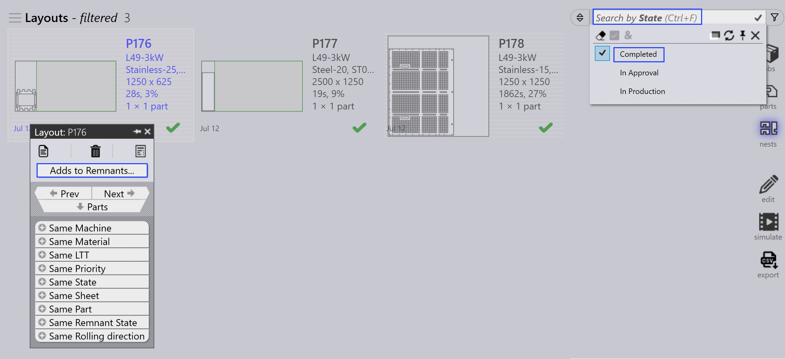
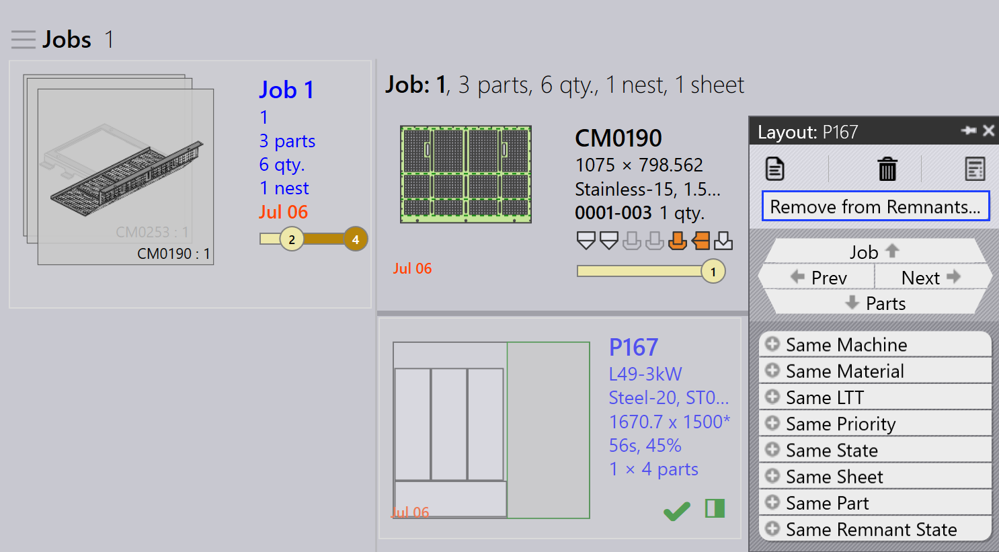

Handmatig restmateriaal beheer
Handmatig restmateriaal configureren
-
Klik op fabriek → instellingen → Job.
-
Selecteer Plaatvoorraad bijwerken bij (niet) vrijgeven van nest.

Dit zorgt ervoor dat restmaterialen worden bijgehouden en bijgewerkt in de plaatvoorraad wanneer een nest wordt voltooid of vrijgegeven.
Handmatige restplaat vanuit job
-
Klik met de rechtermuisknop op een als voltooid gemarkeerde layout (layout met groen vinkje).
-
Klik op de Toevoegen aan restanten… optie.
-
Nu wordt de restplaat handmatig toegevoegd aan de plaatdatabase.

Handmatige restplaat vanuit job nest
-
Schakel over naar Job → Nests Pagina. Gebruik Filters en selecteer Status.
-
Kies Completed om alle voltooide layouts te tonen.
-
Klik met de rechtermuisknop op de layout waarvoor handmatig restmateriaal moet worden gemaakt en klik op Toevoegen aan restanten….

Restmaterialen verwijderen
Als een handmatig gemaakte restplaat beschadigd of verloren is, kunt u deze uit de plaatvoorraad verwijderen zonder deze direct te verwijderen.
-
Klik met de rechtermuisknop op de restplaat die u wilt verwijderen.
-
Klik op de Verwijderen van restanten… optie.
-
De restplaat wordt verwijderd uit de plaatdatabase.
-
Het gedeeltelijk gearceerde vierkant icoon dat aangeeft dat de restplaat is gemaakt, wordt ook gewist wanneer het restmateriaal wordt verwijderd.

| Restplaten (gemaakt door Auto/Handmatig) worden met hoge prioriteit gebruikt tijdens automatisch nestplan of interactief nestplan. |